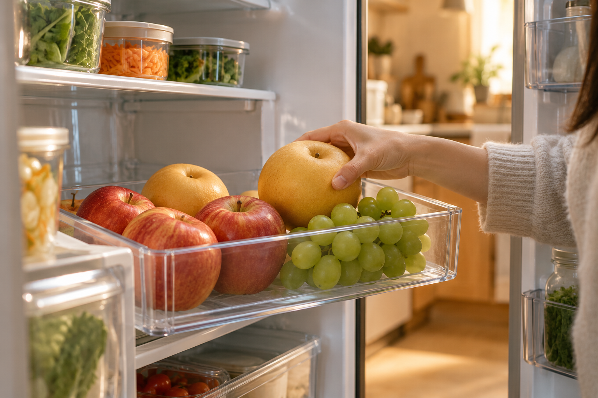

ESG / REPORT ·
냉장고 문을 열기 전에,
과일의 자리를 정합니다
사 온 과일을 채소 칸 깊숙이 넣기보다 눈이 먼저 닿는 곳에 두면, 오늘 먹을 한 조각을 고르기가 쉬워집니다.

장을 보고 돌아온 날에는 손에 든 봉지가 많습니다. 우유를 넣고, 반찬통을 밀고, 과일은 마지막에 냉장고 안으로 들어갑니다. 빈자리를 찾다 보면 사과와 배가 채소 칸 맨 안쪽으로 미끄러집니다. 문을 닫고 나면 오늘 산 과일은 생각보다 빨리 시야에서 사라집니다.
며칠 뒤 저녁을 준비하려고 냉장고를 열었을 때, 뒤쪽에서 과일 봉지를 발견하는 때가 있습니다. 먹을 수 없는 과일이었던 것은 아닙니다. 다만 먼저 눈에 들어오는 반찬과 음료 사이에서, 꺼낼 타이밍을 놓쳤을 뿐입니다. 과일을 끝까지 먹는 일은 장바구니에서 시작하지만, 집 안에서 어느 자리에 놓이는지도 함께 좌우합니다.
오늘 먹을 과일은 눈이 닿는 곳에
과일을 씻어 두라는 말은 아닙니다. 과일마다 보관하는 방법이 다르고, 집의 냉장고 사정도 다릅니다. 대신 오늘이나 내일 먼저 먹을 과일 몇 개만 투명한 바구니나 얕은 접시에 따로 두어 봅니다. 문을 열 때마다 그 자리가 보이면, 간식을 찾는 손이 자연스럽게 한 번 더 머뭅니다.
봉지째 넣어야 한다면 입구를 접어 안쪽으로 밀어 넣기보다, 무엇이 들었는지 보이도록 세워 두는 방법도 있습니다. 가족이 함께 사는 집이라면 “이건 이번 주에 먼저 먹자”는 말을 한 번 나누는 것만으로도 충분합니다. 먹을 순서를 정하는 일은 거창한 정리가 아니라, 다음 끼니에 손이 갈 곳을 알려 주는 작은 표시입니다.
오늘 먹을 과일은, 오늘의 눈높이에 두어도 좋겠습니다.
남은 양을 살피는 짧은 습관
냉장고를 정리하는 날까지 기다리지 않아도 됩니다. 물을 꺼내거나 반찬을 넣을 때, 과일이 얼마나 남았는지 한 번 보는 것으로 충분합니다. 두 개 남은 배가 보이면 다음 날 아침에 하나를 깎을 수 있고, 포도가 남았다면 저녁 식탁에 작은 접시를 하나 더 놓을 수 있습니다.
가게에서도 손님이 과일을 어떤 속도로 먹을지 물어볼 수 있겠습니다. 혼자 먹는지, 며칠 안에 나눠 먹을지에 따라 권할 양과 숙도가 달라지기 때문입니다. 집에서는 보이는 자리를 만들고, 가게에서는 먹을 시간을 묻는 일. 두 장면이 이어지면 과일은 더 오래 냉장고에 머무는 물건이 아니라, 제때 꺼내 먹는 식탁의 한 부분이 됩니다.
과일이 남지 않았다고 해서 모든 낭비를 계산할 수 있는 것은 아닙니다. 다만 잊히는 이유를 한 번 살피면, 다음 장보기의 양과 보관할 자리를 조금 다르게 고를 수 있습니다. 냉장고 문을 열기 전, 과일을 둘 한 칸을 먼저 비워 둡니다. 그 작은 자리가 오늘의 한 조각을 남깁니다.
KFA Editorial · 일상에서 떠올릴 수 있는 장면을 구성한 생활 에세이입니다.